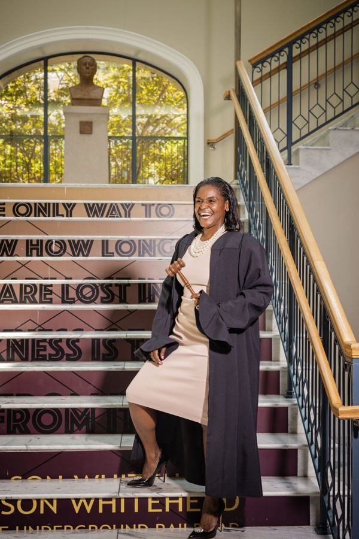
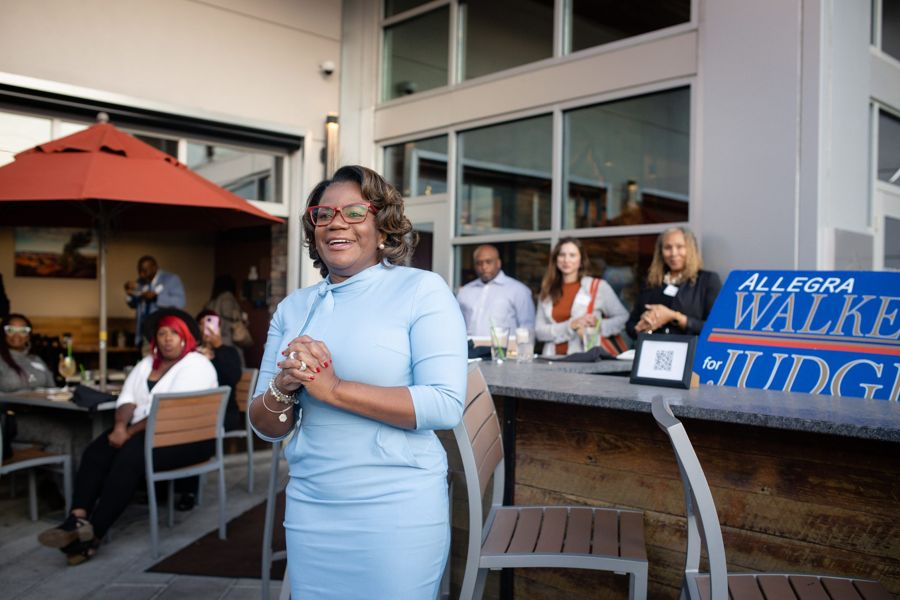
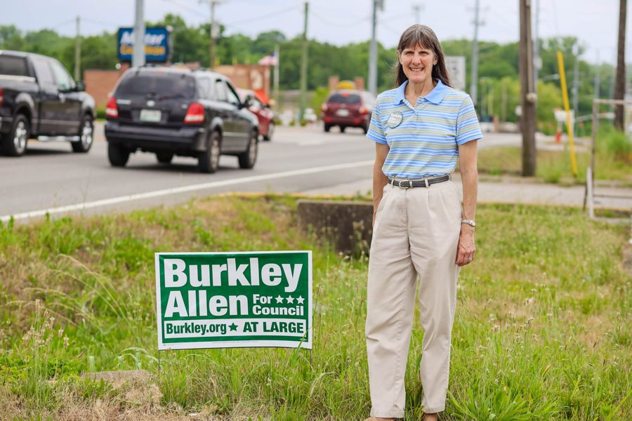

Judiciary
Judge Cynthia Chappell
Cynthia Chappell won a four-way open primary in 2022 to become Criminal Court Judge for Division VI in Davidson County. Leo Operations worked with Judge Chappell on her 2022 campaign.
Running for office, leading a cause or growing a brand? Start a project with Leo Operations or email Rod@LeoOperations.com.
About Judge Cynthia Chappell
- In the May 3, 2022 Democratic primary for Criminal Court Division VI, Chappell took 41.3% of the vote, ahead of Marcus Shute (26.3%), Tillman Payne (18.1%), and Seth Norman (14.4%). Source
- Chappell joined the Criminal Court bench in 2022 after 29 years in private practice. Source
- Chappell earned a B.A. in psychology from Rhodes College and a J.D. from the University of Memphis School of Law. Source
More clients
In goodcompany.

JudiciaryJudge Robin K. HayesJudiciaryJudge Jennifer Smith
JudiciaryJudge Allegra WalkerMetro & cityVice Mayor of Nashville, TN – Jim Shulman
Metro & cityCouncilwoman At-Large – Burkley AllenElected officialsCriminal Court Clerk of Nashville, TN – Howard Gentry Metro & cityMayor of Nashville, TN – Freddie O’Connell
Metro & cityMayor of Nashville, TN – Freddie O’Connell Elected officialsTN State Rep. – Justin Jones
Elected officialsTN State Rep. – Justin JonesReady towin?
Tell us what you’re running for, building or launching. We’ll tell you how we make people remember it.
Email Leo Operations →